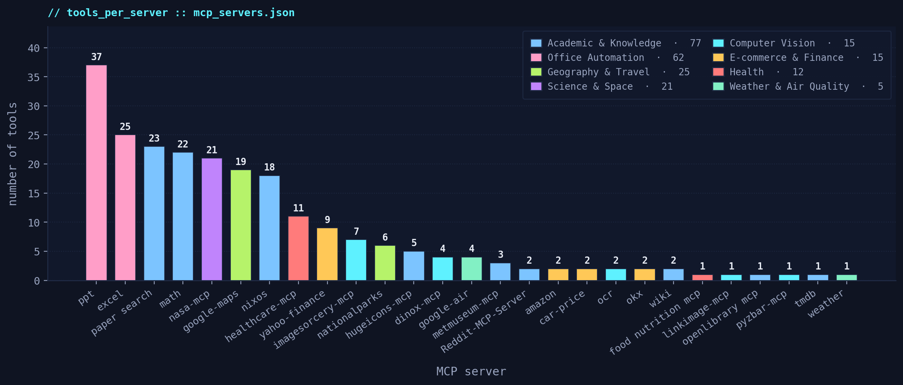

M³-Bench is a benchmarking & analysis suite built on top of the Model Context Protocol. It spins up 27 real MCP servers, drives multi-modal LLMs through 211 image-grounded tasks, and evaluates every trajectory at three granularities: step, call, and final answer.
user> image: 00000000.png · give me the total price of the 3 drinks on the shelf. mcp> mcp-yolo.detect-all-objects(image=00000000.png) → bottle (×3) mcp> amazon.search_products(keywords="Pepsi 20 oz") │ mcp> amazon.search_products(keywords="Pepsi Zero 20 oz") ├─ parallel mcp> amazon.search_products(keywords="Diet Pepsi 20 oz") │ mcp> math.sum(numbers=[2.49, 2.49, 2.29]) → 7.27 assistant> Total ≈ $7.27 // 6 tool calls · 3 servers · 2 steps · ✓ reward = 1.0
Most tool-use benchmarks handcraft a small simulated tool set or score the agent only on text output. M³-Bench instead boots real MCP servers and lets the model actually call them: Amazon catalog, Wikipedia, Google Maps, NASA APOD, yfinance, Ultralytics YOLO detection, barcode scanning, OCR, Excel, PowerPoint, and many more.
A single task may need the agent to read a shelf photo, detect the items with YOLO, search each one on Amazon for a price, sum them with a math tool, and return the total — threaded across multiple servers and parallel calls.
Every task stresses all three axes at once, so models cannot coast on single-tool recall or text-only reasoning.
Each task ships with an image. The agent must visually parse shelf photos, labels, barcodes, OCR targets, or scene content, then feed that perception into the tool chain.
Tool calls span several servers. Typical chains: YOLO → Amazon → Math · OCR → Wiki → Weather · Barcode → OpenLibrary → Summary.
Within a single reasoning step the agent often fires several parallel calls (e.g. three Amazon queries for three items detected in one image), then synthesizes the joined result.
All servers are booted over stdio through a single
MCPHost. The agent sees a unified catalog and picks
relevant tools at each step. The figure counts tools per server in the
current fleet.

wiki · openlibrary · paper_search (arXiv / PubMed / bioRxiv / medRxiv / IACR / Semantic Scholar) · nixos · metmuseum · nationalparks.
ocr · pyzbar (barcodes) · imagesorcery (crop/draw/blur) · mcp-yolo (Ultralytics YOLO + YOLO-World) · linkimage.
amazon · tmdb · hugeicons · car-price (FIPE).
yahoo-finance · okx (crypto prices + candlesticks).
google-maps · google-air · weather · nasa-mcp.
healthcare-mcp (FDA / PubMed / Clinical Trials / DICOM) · food_nutrition_mcp.
excel · ppt (Office-PowerPoint-MCP-Server).
arithmetic · stats · trig — closes the numeric reasoning loop.
reddit (subreddit search, posts, comments).
We do not collapse everything to one scalar. Each prediction is scored at three granularities so weaknesses are visible — e.g. a correct plan with the wrong final answer shows up at the call layer, not at the step layer.
Trajectory quality against GT steps: recall, precision,
avg similarity, step coherence, order consistency, merge purity.
Runs via evaluate_trajectories.py.
Per-call classification: correct / partially correct /
hallucinated / redundant. Aggregated pies in
evaluate_calls.py.
Task completion + information grounding of the final reply vs
GT, scored by evaluate_final.py.
Average step-level score sorted high → low. Numbers mirror Table 1 of the paper — Avg is a composite of Recall, Precision, Arg Similarity, Step Coherence, Order Consistency, Merge Purity, Task Completion, and Info Grounding.
source :: paper/sec/4_Metrics.tex · Table 1 · tab:mcp_multimodal_results
The original benchmark used DINO-X-MCP, a cloud detection service with a paid API key and per-call quota. That made every rerun both expensive and flaky. As of May 2026 we ship a drop-in replacement.
Identical tool names: detect-all-objects and
detect-objects-by-text. Identical payload shape. No
task JSON edits needed.
Backed by Ultralytics YOLO (closed-set) and YOLO-World (open-vocab text-prompt). Fully on-device. No cloud key, no rate limit, no bill.
dinox-mcp stays in mcp_servers.json
with "disabled": true. Older papers that cite the
DINO-X chain can still be reproduced by flipping one flag.
tools/functional_test_mcp_servers.py probes every
enabled server with a real call; mcp-yolo passes on
media/00000000.png with a valid detection.
Requirements: Python 3.11, Conda, Node.js (for JS-based MCP servers),
optional CUDA, and API keys in .env for commercial
endpoints plus a few MCP servers (Amazon / NASA / Unsplash / Reddit).
conda create -n mcp_app python=3.11 -y
conda activate mcp_app
pip install -r requirements_pip.txt
# Node-based MCP servers
for d in tmdb-mcp-server mcp-server-nationalparks \
metmuseum-mcp okx-mcp hugeicons math-mcp; do
(cd servers/$d && npm i && npm run build)
done
(cd servers/healthcare-mcp-public && npm i)python tools/test_mcp_servers.py
# -- initialization handshake per server
python tools/functional_test_mcp_servers.py
# -- one real tool call per server, checks
# isError and returns a short preview27 servers report OK end-to-end on a clean checkout.
bash scripts/benchmark_fuzzy.sh
# → results/<model>_test_mcp_fuzzy.jsonAll 211 tasks. Picks top-K tools per step from the unified catalog.
bash scripts/evaluate_step.sh # trajectory quality
bash scripts/evaluate_call.sh # call classification
bash scripts/evaluate_final_answer.sh # task completionThree granularities, one command each. Numbers land in results/<model>/.
M³-Bench: Multi-Modal, Multi-Hop, Multi-Threaded Tool-Using MLLM Agent Benchmark.
MCP host, 27 servers, benchmarking scripts, three evaluation layers, plotting tools.
211 image-grounded tasks with ground-truth MCP trajectories and final answers.
Discussion, related resources, and community comments.
@misc{yang2025m3bench,
title = {M3-Bench: Multi-Modal, Multi-Hop, Multi-Threaded Tool-Using MLLM Agent Benchmark},
author = {Yang, Eta and Zhou, Yang and Zhou, Mu and Metaxas, Dimitris N. and others},
year = {2025},
eprint = {2511.17729},
archivePrefix= {arXiv},
primaryClass = {cs.AI},
url = {https://arxiv.org/abs/2511.17729}
}contact: eta.yang@rutgers.edu · dnm@rutgers.edu · sibling project: SPARK